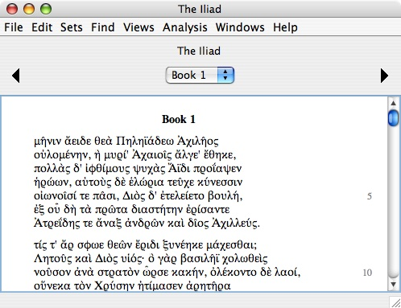
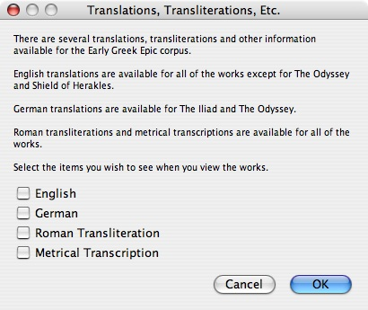
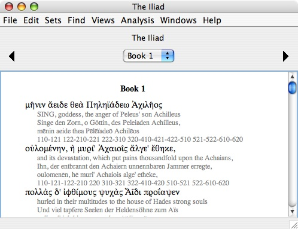

|
|
|
The Early Greek Epic corpus is in the original Polytonic Greek. For this corpus we offer English and German translations as well as Roman transliterations and metrical transcriptions.
The following example shows how Book 1 of Homer's The Iliad appears in the original Greek:

To see the translations, transcriptions and transliterations, use the "Translations, Transliterations, Etc." command in the "Views" menu (Command-T):

Use this dialog to select which combination of the four items you want to see in the work window. In the following example, we have turned on all four options:

The Greek text is primary, in the sense that it is the Greek words that are tagged. The English and German translations and the transliterations and transcriptions are not tagged with morphology data or any other kind of tagging data. Thus, to get information about a word, you must select the Greek word, not the corresponding English or German word or the corresponding transliteration or transcription text.
The Roman transliteration is a simple character substitution from the Greek alphabet into the Latin alphabet.
|
|
|